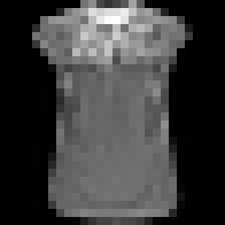
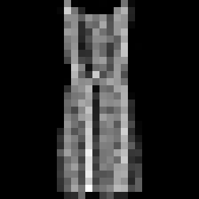
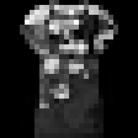
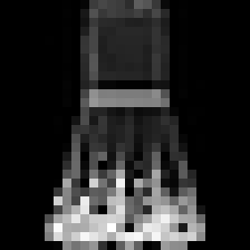
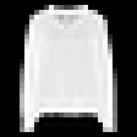
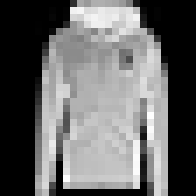

MLP sửa lỗi

Thật: Áo sơ mi
Pixel: Áo thun
MLP: Áo sơ mi
p lớp MLP: 48,2%

Thật: Váy
Pixel: Quần dài
MLP: Váy
p lớp MLP: 70,0%
MLP tạo lỗi mới

Thật: Áo sơ mi
Pixel: Áo sơ mi
MLP: Áo thun
p lớp MLP: 60,6%

Thật: Váy
Pixel: Váy
MLP: Túi
p lớp MLP: 56,1%
Cả hai sai

Thật: Áo sơ mi
Pixel: Áo chui đầu
MLP: Áo khoác
p lớp MLP: 42,7%

Thật: Áo khoác
Pixel: Áo chui đầu
MLP: Áo chui đầu
p lớp MLP: 93,2%
Hai ảnh đầu tiên mỗi nhóm theo vị trí validation. Giữ ID và nhãn, không chọn theo vẻ ngoài.